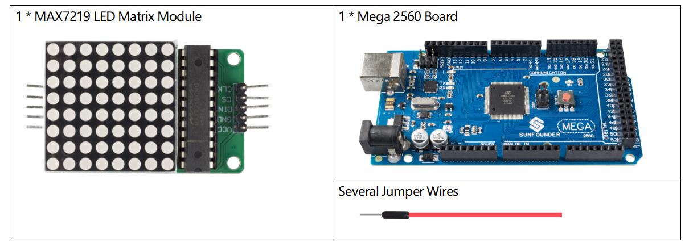
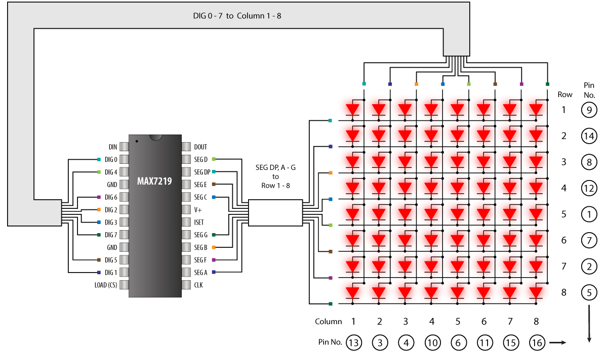
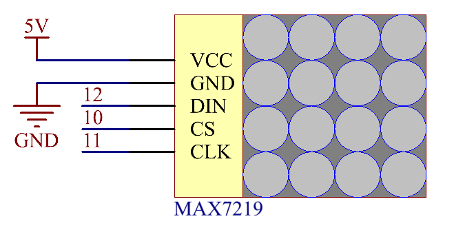

2.8 LED-Matrixmodul¶
Überblick¶
In dieser Lektion lernen Sie das LED-Matrixmodul kennen. Das LED-Matrix-Modul verwendet den MAX7219-Treiber, um die 8 x 8-LED-Matrix anzusteuern.
Erforderliche Komponenten¶
Komponenteneinführung¶
Die 64 LEDs werden von 16 Ausgangspins des IC angesteuert. Die maximale Anzahl von LEDs, die gleichzeitig leuchten, beträgt tatsächlich acht. Die LEDs sind als 8 × 8-Satz von Zeilen und Spalten angeordnet. Der MAX7219 aktiviert also jede Spalte für einen sehr kurzen Zeitraum und steuert gleichzeitig auch jede Zeile. Wenn Sie also schnell durch die Spalten und Zeilen wechseln, bemerkt das menschliche Auge nur ein kontinuierliches Licht.
MAX7219¶
Diese integrierten Schaltkreise von Maxim dienen zur Ansteuerung von 64 einzelnen LEDs oder bis zu 8 Ziffern von 7-Segment-Anzeigen. Der Treiber implementiert eine SPI-kompatible Slave-Schnittstelle, die von Arduino über nur 3 digitale Ausgangspins gesteuert werden kann.
Fritzing Circuit¶
In diesem Beispiel wird der VCC-Pin von MAX7219 an 5 V, GND an Masse, DIN an Digital-Pin 12, CS an Digital-Pin 10, CLK an Digital-Pin 11 angeschlossen.

Schematische Darstellung¶
Code¶
Die Codes verwenden die Bibliothek LedControl.h. Weitere Informationen finden Sie in Teil 4 - 4.1 Hinzufügen von Bibliotheken zum Hinzufügen in der Bibliothek zur Arduino IDE.
Nach dem Hochladen des Codes leuchten die LEDs in der Reihenfolge der Spalten, Zeilen oder Punkte auf, oder Bilder erscheinen auf der LED-Matrix.
Code-Analyse¶
Durch Aufrufen der Bibliothek LedControl.h können Sie die LED-Matrix problemlos verwenden.
#include "LedControl.h"
Bibliotheksfunktionen:
LedControl(int dataPin,int clockPin,int csPin,int numDevices)
Erstellen Sie eine Instanz vom Typ LedControl, über die wir mit den MAX7219-Geräten kommunizieren. Die Initialisierung eines LedControl erfordert 4 Argumente.
dataPin, clockPin, csPin: Die ersten drei Argumente sind die Pin-Nummern auf dem Arduino, die mit dem MAX7219 verbunden sind. Sie können einen beliebigen digitalen E / A-Pin am Arduino auswählen. Da jedoch einige Pins auch für die serielle Kommunikation verwendet oder mit LEDs verbunden werden, sollten Sie die Pins 0, 1 und 13 vermeiden..
numDevices: Das vierte Argument ist die Anzahl der kaskadierten MAX7219-Geräte, die Sie mit diesem LedControl verwenden. Die Bibliothek kann bis zu 8 Geräte aus einer einzigen LedControl-Variablen adressieren.
void shutdown(int addr, bool b)
addr: Die Adresse des zu steuernden Displays.
b: Wenn true, wechselt das Gerät in den Ausschaltmodus. Wenn falsches Gerät in den normalen Betrieb geht.
void setIntensity(int addr, int intensity)
Mit dieser Methode können Sie die Helligkeit in 16 diskreten Schritten steuern. Bei größeren Werten wird die Anzeige bis maximal 15 heller.
addr: Die Adresse des zu steuernden Displays.
intensity: die Helligkeit des Displays. Es sind nur Werte zwischen 0 (am dunkelsten) und 15 (am hellsten) gültig.
void clearDisplay(int addr)
Alle LEDs aus nach diesem.
addr: Die Adresse des zu steuernden Displays.
void setLed(int addr, int row, int col, boolean state)
Stellen Sie den Status einer einzelnen LED ein.
addr: Die Adresse des zu steuernden Displays.
row: Die Zeile der LED (0..7).
col: Die Spalte der LED (0..7).
state: Wenn true, ist die LED eingeschaltet, wenn false, ist sie ausgeschaltet.
void setRow(int addr, int row, byte value)
Stellen Sie alle 8 LEDs hintereinander auf einen neuen Status.
addr: Die Adresse des zu steuernden Displays.
row: Zeile, die gesetzt werden soll (0..7).
value: Jedes auf 1 gesetzte Bit leuchtet die entsprechende LED auf (z. B. leuchtet B01000000 die zweite auf).
void setColumn(int addr, int col, byte value)
Stellen Sie alle 8 LEDs hintereinander auf einen neuen Status.
addr: Die Adresse des zu steuernden Displays.
col: Spalte, die gesetzt werden soll (0..7).
value: Jedes auf 1 gesetzte Bit leuchtet die entsprechende LED auf (z. B. leuchtet B01000000 die zweite auf).
Phänomen Bild¶